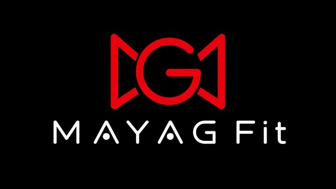

Тренування в Telegram
Не додаток: відкриваєш чат і працюєш як у звичайному діалозі.
Як це працює
Без встановлення. Усе відбувається в Telegram, як у звичайному листуванні.
-
01
Відкрий MAYAG Fit у Telegram
Натисни кнопку, і відкриється чат. Telegram вже є на телефоні.
-
02
Обери, хто ти
Тренуєшся сам, з тренером, працюєш тренером або представляєш заклад.
-
03
Працюй як у звичайному чаті
Повідомлення, кнопки, відповіді: без окремого додатка.
Більше, ніж просто тренування
MAYAG Fit допомагає знайти місце для тренувань, тренера або заняття, організувати процес, стежити за прогресом і залишатися на зв’язку.
Обери свій шлях у меню зверху або одразу відкрий MAYAG Fit у Telegram.
РУХАЙСЯ • ДОСЯГАЙ • ЗРОСТАЙ
Спробуй MAYAG Fit
Відкрий чат у Telegram і подивись, як це працює для тебе.
ВІДКРИТИ В TELEGRAM